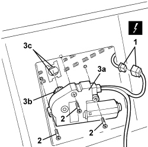
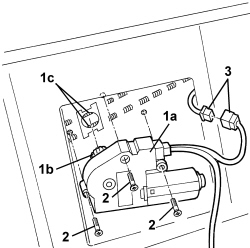

7030B70 SUN ROOF MOVEMENT MOTOR - R+R
- Path
- Procedures > 70 FITTINGS > 7030 SUN ROOF/GLASS PANEL > 7030B SLIDING ROOF > 7030B70 SUN ROOF MOVEMENT MOTOR - R+R
- Kind
- repair procedure (removal / refitting; the operation number is the code)
- Applies to
- all engines; all production periods
- Interactive page
- https://sloeber94.github.io/elrnDB/alfa/159/en/#/939004837
Applies to: all engines; all production periods
 Removing
Removing
 Refitting
RefittingOp. 7040E40 MODULAR FRONT COURTESY LIGHT - R R
1. Disconnect the electrical connection.
Description | Component |
|---|---|
SUN ROOF COUPLING |
2. Undo the bolts.
3. Remove the sun roof movement motor and control unit (3a), releasing the toothed wheel (3b) from the slide drive cables (3c) making sure not to slide the actual cables. (If the cables do not slide simultaneously then this could cause the non alignment of the slides resulting in a malfunction of the sun roof).

Applies to: all engines; all production periods
Refitting
Removing- Check that the motor and control unit are not damaged.
1. Position the motor and control unit (1a) and attach the motor toothed wheel (1b) to the slide drive cables (1c) taking care not to slide the actual cables. (If the cables do not slide simultaneously then this could cause the non alignment of the slides resulting in a malfunction of the sun roof).
2. Fasten the motor and control unit using the bolts.
3. Connect the electrical connection for the motor and control unit.

Applies to: all engines; all production periods
Op. 7040E40 MODULAR FRONT COURTESY LIGHT - R R
- Check that the sun roof is working.
- If necessary, align the sun roof.
Op. 7030B54 SUN ROOF (ASSEMBLY) - ALIGNMENT AND POSITIONING
- If necessary, reprogramme the control unit: see the "Description and Operation" chapter.
Topics linked from this page (4)
- 7030 SUN ROOF/GLASS PANEL
- 7030B54 SUN ROOF (ASSEMBLY) - ALIGNMENT AND POSITIONING
- 7040E40 MODULAR FRONT COURTESY LIGHT - R R
- D045 SUN ROOF COUPLING
Topics that link to this page (13)
- Q001 SUN ROOF NOT WORKING
- Q005 SUN ROOF STICKING
- Q006 SUN ROOF DOES NOT STOP IN END OF TRAVEL POSITION
- S080 SUN ROOF MOTOR NOISY
- 7030B12 SLIDING ROOF (ASSEMBLY) - R+R
- 7030B14 SLIDING ROOF - DISMANTLE AND REBUILD WITH ASSEMBLY REMOVED
- 7030B40 DRAINAGE CHANNEL - R R
- 7030B50 SUN ROOF SLIDING GUIDE (ONE), LH OR RH - R.R
- 7030B54 SUN ROOF (ASSEMBLY) - ALIGNMENT AND POSITIONING
- 7030B66 SUN-ROOF MOVEMENT ECU - R+R
- 7040H16 ROOF PANEL LINING FOR VERSIONS WITH SUN ROOF - R.R
- E3060 SUN ROOF - WIRING DIAGRAM
- E3060 SUN ROOF - COMPONENT LOCATION